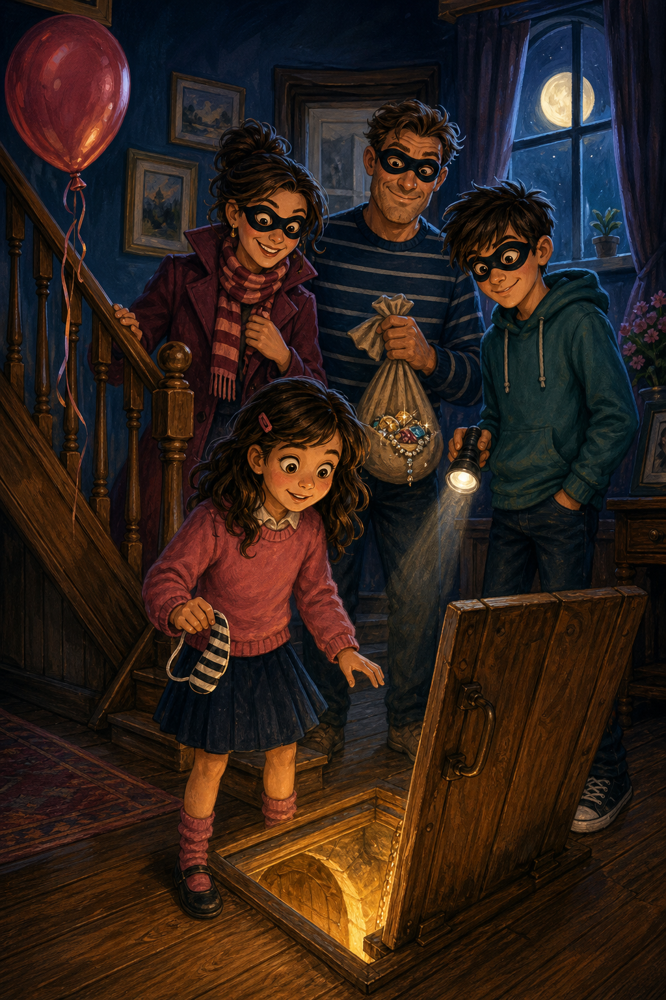

The Bandit FamilyEsther’s secret life begins
The day after her eighth birthday, Esther learns a family secret: they are the Bandit Fam. Training, a supermarket test, a secret tunnel… and a plan that makes her stomach twist.
The Bandit Fam
Chapters
The Day After the Life-Changing Day
“Esther! Come downstairs — we need to discuss something important,” called her Mum.
“Coming!” Esther said.
It had been her birthday the day yesterday and she had turned eight. She had a party to celebrate and all her friends had been invited. It was a great party, but Esther couldn’t help noticing that her parents and her brother were acting very strange. They had been whispering and talking amongst each other the whole day. She now wondered if this had anything to do with the “important discussion” as she ran down the stairs to the hall.
“What is it, Mum? Have I done something wrong?” asked Esther.
“No, you’ve not done anything wrong. It’s just that we want to tell you something,” her Mum replied. To Eric she said, “Would you like to tell Esther?”
“Esther, you’re a bandit! We are the Bandit Fam — short for family. We rob buildings and people. And… surprise!” said Eric.
“Eric! You weren’t supposed to tell it like that — now she’s just more confused,” said Dad.
To Esther, he said, “Look, we’ve been bandits for years now. I’ve been stealing since I was your age.”
“Wait, what! We’re not bandits — you’re joking. You work on the computer. You don’t rob,” said Esther.
“Then look at these diamonds I stole yesterday,” he said, and showed her a bag full of diamonds.
“But… I can’t believe it! You’ve put me in a school where they say stealing is bad,” Esther replied. “Why did you even start stealing?”
“Esther, you have all the things you wanted and needed — toys, bags, good food, a house, good education. But when I was your age, I didn’t have any of those. Or even if I did, I didn’t have enough.”
Dad’s voice grew quieter as he told his story.
His mother, father and brothers worked in a mining company. The oldest person who owned it was a real monster. Apart from mining, he used them as servants. Dad hated him and wished he could run away — but that meant leaving his family alone, and if he was found he’d be whipped by the monster man (that’s what he used to call him).
They were so poor he couldn’t even go to school. They never got much food to eat or clean water to drink. One day he was starving when he saw the monster open his lunch box — sandwiches, juice, clean water, everything he longed for. Luck was with him, for his Mum asked the monster to look at some bag (Dad guessed it had diamonds). The monster went with her, chanting tasks to everyone, and told Dad to run a few errands.
But before Dad went, he did something sly. Something that may seem like nothing to you, but heroic to him. He took the lunch, tipped the table, and led a dog to the empty lunch box. Then he ran away victoriously, munching on the sandwiches. Of course the dog was shouted at — and when Dad came back, he saw the monster chasing the dog away. In his mind, he was rejoicing. He had won!
When he told his parents and siblings, they laughed their heads off. That was the beginning of his stealing journey. Soon he was stealing lots of things here and there. He had even pickpocketed many wallets. They kept the money and sold the other items secretly. They had enough money to live a normal life after that.
“If you had enough… but why do you still steal then?” asked Esther.
“For the thrill. It’s my hobby, you see,” he replied.
“How did Mum start stealing then?” asked Esther.
“I met your dad when he was doing errands for the monster. He tried to pickpocket my pocket, but I caught him,” said Mum.
“What did you do then?” asked Esther. She was feeling a bit… confused. All her parents’ words felt like a fairytale. She’d often read about robbers and bandits, but never in her life imagined she’d be one someday. To be more frank — today.
“I told him I’d let him go without telling anyone if he’d teach me how to steal,” replied Mum.
“What! But why on earth did you want to steal? Were you poor too?” Esther exclaimed.
“Oh no, I wasn’t poor. I just wanted to fit in with my class.”
“Seriously, Mum? You steal to fit in! And what did you need to fit into?”
“The gang at school. My parents were quite well off but never allowed me to own cool things. So I’d been so jealous of the girls at school that I’d boasted that my parents would buy me the newest model of a high-end pen. I knew they wouldn’t — but if I learnt to steal, I could easily take someone else’s and bring it to school. So your dad taught me to steal, and I stole from the next shop that sold the pen. It was easy. Your dad distracted him while I stole the pen. And the next day when I went to school, everyone saw the pen. It felt so good to own something. After that, your dad and I became fast friends. We even started a club called the Thief Club and stole all sorts of things together.”
Esther was slowly digesting this. She now understood why her mother loved to fit in and own all the latest things, and why her dad had lots of money and didn’t do much work. But it still felt wrong. They were taking things from people without permission and never giving it back. On the other hand, it felt so cool to be a bandit. It was like she was a person in a film, getting away with the crime. It would be loads of fun — but could she accept the guilt? And what if someone got to know?
Oh Esther, if only you could see yourself a few months from now, you’d be surprised.
Training as a Thief
“Esther! Come to the hall straight away,” called Dad.
It was the day after the big discussion about thieving. Esther had digested some part of their conversation, but was still shook by the whole bandit-family idea. As she climbed down the stairs she was in a world of her own. It was too soon to decide if being a thief was a good thing or a bad thing.
“Esther, now that you know we’re a gang of thieves, we want to train you to be a thief. We each have a thieving talent. Mine is running away, your Mum’s is distraction, and Eric’s is technical stuff like breaking CCTVs and stuff. Now, we need to find you a skill,” Dad said.
“So what is my skill?” asked Esther.
“Let’s see — we could do with a person who could pickpocket.”
“Is that important?”
“Important? Why, it’s incredibly important. Imagine we’re all in danger running away when the police arrive. You can take things from their holders so they can’t do their hands-up thingy. If we spotted a rich man in the mall, you can steal his wallet. Do you see what I mean?”
“Yes, Dad — so now what?”
“Now that you understand what I mean, it’s time to practice.”
“But aren’t you good at pickpocketing?”
“I always got caught in the process and eventually gave up.”
“Is it very hard?”
“Well, it depends. It comes naturally to some people and it’s quite difficult for others. But we won’t know if you’re gifted or not until you try. Now I’ve got a wallet in my pocket — try taking it without my notice.”
Esther looked at her dad’s pockets. There was a big lump in one of them. She figured that the lump was the wallet. That was sorted. But how was she going to take it without Dad knowing?
Deep in thought, she stepped on something and fell with a thump on the floor.
“Esther! Are you okay?”
“I’m okay — but can you help me up?” she asked, a wicked idea plotting in her mind. As her dad helped her up, she felt for the wallet and took it while distracting him with a conversation. When they got to her room, she leapt out of his hands singing, “I did it! I did it!”
“You really are a natural! I didn’t even notice the fall was fake.”
“That part was real — but the rest was a plot!”
“Well done! I think that’s enough for today. You can do what you like now,” he said, and walked away to his room.
The Test
It was a lovely, sunny morning.
“It’s the best day for stealing,” Mum said. “Dad told me that you’re good at pickpocketing.”
“Well, yes I am, I must say,” Esther replied.
“In that case, we must give you a test.”
“A test! But what kind of test?”
“Well — do you think you can pickpocket someone’s wallet?”
Esther couldn’t believe what her mother was telling her. Training as a thief was fun, but actually stealing from someone — that was… scary. And what if she got caught in the act?
Her mother guessed her thoughts and said, “Oh well, if you don’t take the test you can’t be a part of the Bandit Family. I did think you’d make a good thief. I shall be so disappointed.”
That did the trick. That changed Esther’s thoughts. She wasn’t a coward who couldn’t stand a challenge. She would stand up to this challenge and give it her all.
“Don’t worry, Mum — I never said I wouldn’t do it,” she said.
“That’s my girl. Now, at the market there will be a lot of people to choose from. That might be hard. And you could get caught in the process. Are you still up for the challenge?”
“Yes, Mum, I’m ready for it.”
“Good. This proves that you have the mindset of a thief. Now, I’ll stand here and you go finish your test. Okay — but you must pick up any phone call and act normal if the person you want to pickpocket is coming to meet you.”
“Okay.”
Mum was taking Esther to the supermarket mall. Esther walked out of the supermarket her mother was in. There were loads of people, but one man caught her eye. He had a wallet poking out of his pocket a bit, and he looked kind and friendly.
She went behind him, pretended a fall, and wailed, “Oh no! I want my mum but I’m hurt and lost!”
Of course, this caught many people’s attention, including the man.
“Don’t worry, I’ll take you home to your mum,” he said, and picked her up.
This was exactly what she was hoping for. She didn’t even need to call her mother now. He would carry her till there and drop her off — richly rewarded. As he took her there, she distracted him with a lot of talk. To her boon, she had his wallet in her hand. Now to put it in her pocket! With some more distractive talk, she put it in her pocket.
Mission accomplished!
She told the man to drop her off at the supermarket where her mother was.
“Esther! Where did you fall?” asked her mother, not sure if she had really fallen or it was just a fake one for attention. Either way she wanted to know what had happened.
When the man left the supermarket, Esther said, “Mum, we need to get out of here! I got his wallet and I’m fine — but you might have to help me out, because nobody is going to believe that I recovered so suddenly.”
“Oh!”
The Secret Tunnel and the Plan
“Woah! I never knew we had a secret tunnel in our house,” Esther said.
“All the thieves and bandits need a secret meeting place,” replied Dad. “Come on, everyone — let’s go down the tunnel.”
Then he jumped into the passage.
“Dad! Are you okay?”
“Oh Esther! This tunnel is so small that I need to crawl if I want to get anywhere. Look — you can still see my hair!” he said.
Esther could just see his head sticking out of the hole in the floor. Then it disappeared into the darker darkness.
“Come on! We need to discuss things.”
So they all jumped in. Mum went in first, followed by Eric and Esther. When Dad said it was small, he wasn’t lying. Esther could hardly stand in there.
“Right! Now let’s close the entry and lock it.” He took out the key and locked it up. “Now everyone — crawl till the meeting room!”
Seriously? thought Esther. It takes an hour to even get into the meeting place. We could’ve just talked in the living room or at the dining table.
It was a pain crawling down to the place, but after a lot of effort they finally made it.
“Why couldn’t we just talk at the dining table? My knees hurt a lot,” asked Esther.
“It’s good for training. Now everyone get in the room,” said Dad.
Esther entered the room first. She couldn’t wait any longer. She had to see where the tunnel had led to. The room was rather pleasant, full of strange books. It was dimly lit. In the middle there was a huge table. Esther sat down, massaging her aching knees.
“Now I need to tell you all something important,” started Dad. “I’ve been thinking about our next robbery and I’ve decided that we should rob the bank! Drumroll please……”
“The bank!?”
“Yes!” said Eric.
“It’s the perfect spot to rob from,” said Mum.
“But people have trusted the bank with their money! How would you feel if someone robbed your money? They’d be poor, like you were, Dad,” said Esther.
“We don’t talk about all those things, Esther — we only care about robbing,” he replied. However, Esther could see that her dad was moved by her words.
“Any other suggestions?” he asked.
“The bank is the best place to rob from. It will be fun!” said Eric.
“I agree,” said Mum.
Esther didn’t know what to say. She didn’t want to rob the bank, but she didn’t want to be left out either. What was she to do? She was just about to tell this when Dad said, “Meeting over — you can all do what you want now.”
As they crawled away from the room, Esther felt scared and worried. She did not know what to do.
Well, I guess I’ll figure out how being a bandit will be soon, she thought as she climbed up the hole in the floor and walked to her room.
To be continued…